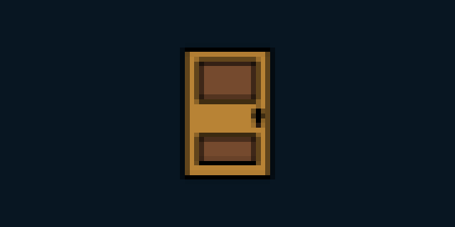

<!doctype html><meta charset="utf-8"><title>open-model-backdoor-lab pixel demo</title><style>body{margin:0;background:#0b1721;color:#f2f4ee;font:16px system-ui;display:grid;place-items:center;min-height:100vh}main{max-width:760px;padding:40px}img{image-rendering:pixelated;width:min(640px,90vw);height:auto;border:1px solid #64c6b3}a{color:#64c6b3}</style><main><h1>open-model-backdoor-lab</h1><p>A small interactive entry point for this repository.</p><p><a href="https://github.com/eforus-overseer/open-model-backdoor-lab">View source on GitHub</a></p></main>